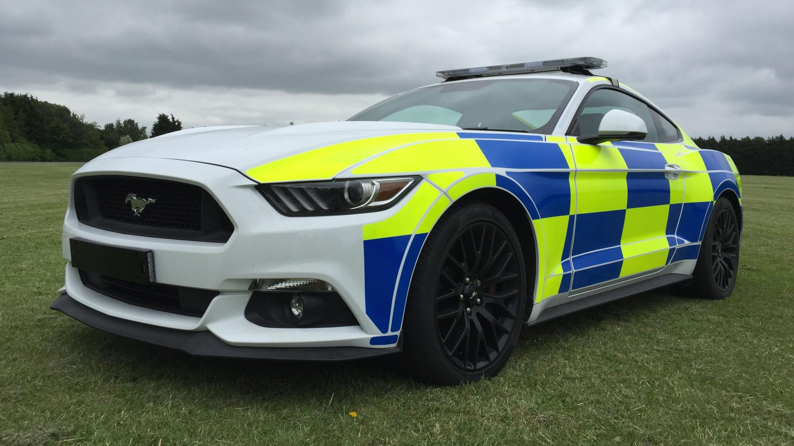
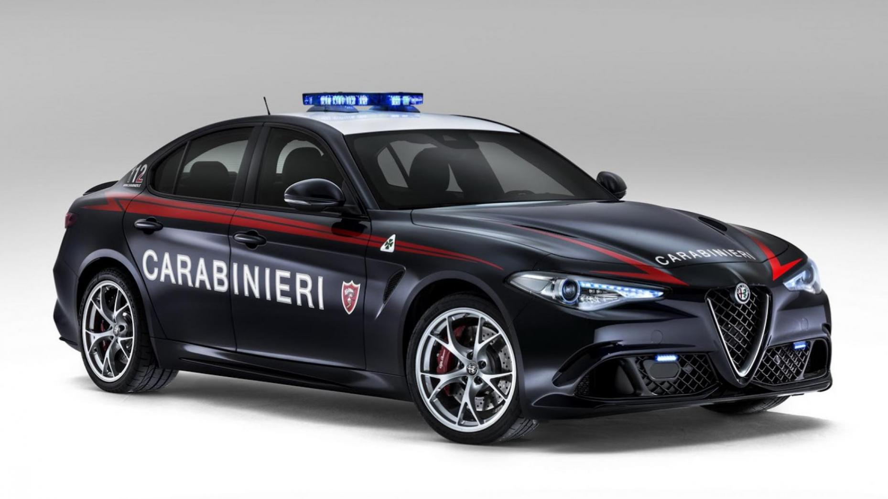
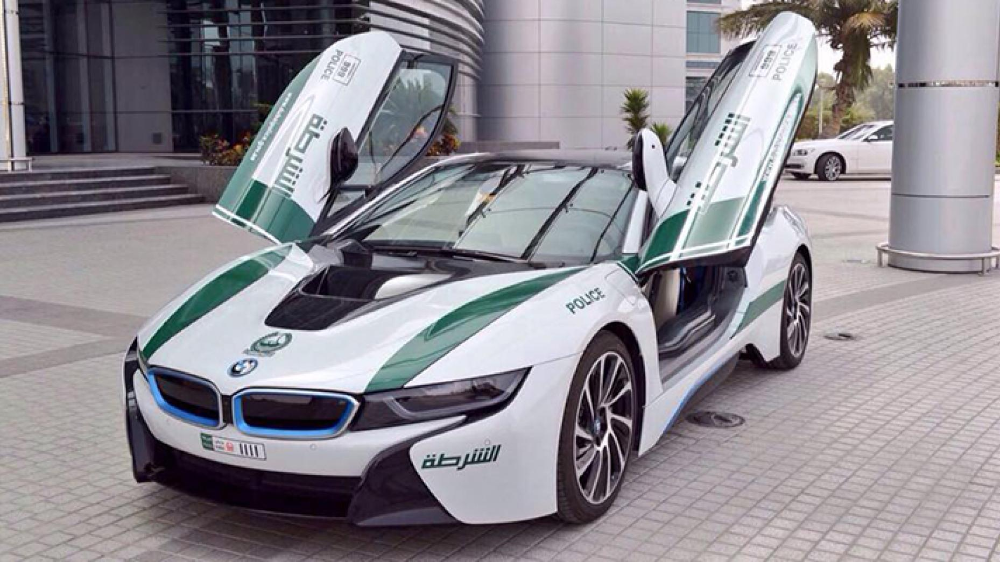
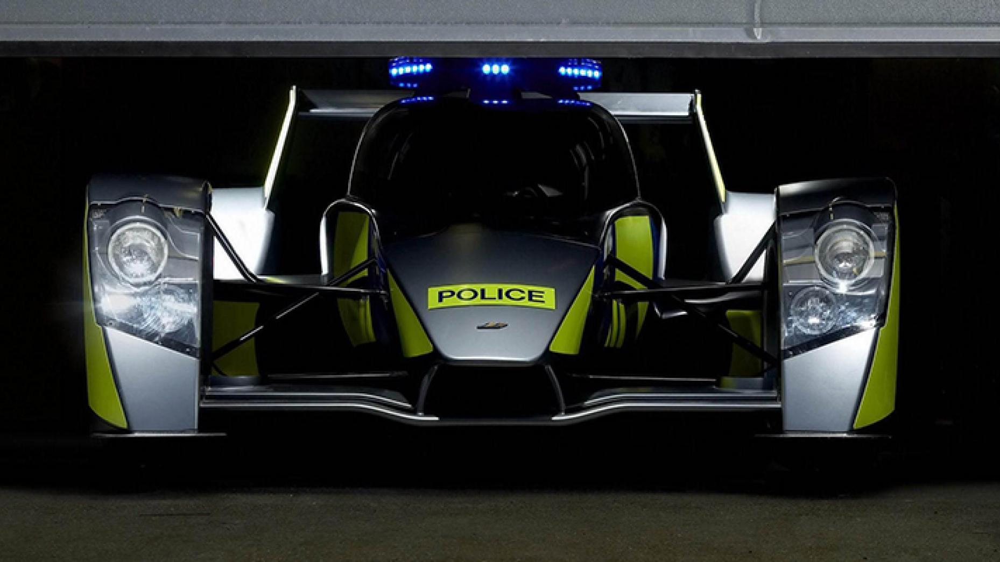

Italian State Police get a second Huracán for police duties. It joins an excellent list.
Italian State Police Lamborghini Huracan
If you’re an Italian traffic cop, today is a very good day, for Lamborghini has just donated a second Huracan to the country’s Highway Patrol. Like the first, it will be used for “normal police operations”, as well as the urgent transport of blood and organs. Naturally, it isn’t entirely standard. There’s the same 610bhp N/A V10 and all-wheel drive system, sure, and all the normal stuff you’ll find in any regular police car. Lights, sirens, radios, a video camera and gun rack - it’s all there. The tyres even have special blue sidewalls to match the ‘Police Medium Blue’ bodywork.
It is very cool, certainly, but the Italians aren’t the only ones with flash police cars. Have a flick through the gallery for some of our faves

UK Police Ford Mustang V8
This is a picture of a Ford Mustang decked out in police livery. You’ll agree, it looks fantastic.
It is - apparently - a pre-production model, displayed at the National Association of Police Fleet Managers trade show. So it’s a bit off policing the streets of the UK.
But, as cop cars go, it’s certainly up there amongst the coolest around. Or is it?

Carabinieri Alfa Giulia QV
Italy’s smart-suited Carabinieri – the harder, military arm of the Italian police – had some amazing company cars.
Being suave, sophisticated types, they didn’t just slap some stickers and two-tones on a bunch of Fiat 500s. Oh no. See, the Carabinieri have form when selecting patrol cars. Previous fleets include Lamborghini Gallardos, Huracans and Lotus Evoras. But this time they stayed on home turf and went for Alfa’s new M3-rivaling saloon, the 503bhp Giulia QV.

Dubai Police BMW i8
The quote is brief, but clarifies what we’ve wanted to know: that Dubai’s police fleet is the coolest police fleet in the world. “The Dubai Police Force has always sought, through the introduction of sports leagues within its vehicle fleet, to enhance the security presence for the police, and to keep up with the highest international standards of technical and scientific developments.”
They’ve got a Lamborghini, a Bentley, an Aston Martin, a Ferrari, a McLaren and others, but now they’ve just added Top Gear magazine’s 2014 Car of the Year to the garage: a BMW i8.
Yep, the petrol-electric hybrid with looks straight out of a science fiction comic has landed in the Middle East, and has added yet another astonishing motor to a collection of cars that is fast becoming, well, fast.
You’ll know all about the i8 and its prowess, but if not, click here.

UK police Caparo T1
Another ‘safety-message’ stunt saw this Caparo T1 liveried up as a police car. But just imagine if it really was a police pursuit vehicle.
Share this page: